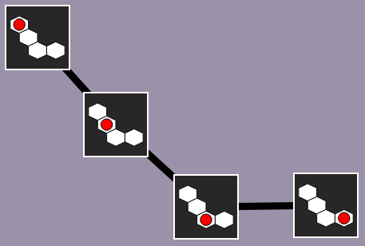

Photos Game
Example
with a board of 2 cells

Help the beaver to take pictures of all possible positions of the red ball.of the two red balls.
You can do this by moving the ballthe balls from one cell to a neighboring cell then click the "Take a Picture" button.
You will find all the taken photos on the grey area below. Draw a line between any two photos if it is possible to move the red ball from one cell to another cell.
Click on the photos to link them with lines.
Photos:

Solution
We take a picture for each of 45 possible positions of the ball. To find your way easily, you can arrange the photos in the gray frame depending on the position of the ball in each photo, as shown below. We can then add lines between the photos describing positions where the ball has moved only one square.
We take a picture for each of the 6 possible configurations of the two marbles. To find your way easily, we can organize the photos. For example, we can make a first column with the photos having a ball in the box at the top left, and a second column with the photos having no ball in this box. You can also sort the photos inside the column, according to the filling of the other boxes. We can then add the features corresponding to the possible displacements of the balls.



To be sure you have not forgotten any features, you can check the lines that start from each photo. For a given photo, we count the number of white squares around the ballthe number of white boxes around the first ball, to which is added the number of white boxes around the second ball. This numberTotal must correspond to the number of lines that are connected to this photo, since this corresponds to the number of possible displacements.
It's computer science !
This topic illustrates how to represent situations (photos of a state) and transitions (displacement of a marble) in the form of a graph, that is to say, a set of objects, some of which are connected to each other by lines. It is very interesting to reduce a problem to a graphical view, because there are many very efficient algorithms for dealing with problems expressed by graphs.
Some problems naturally appear as a graph, such as finding a way to travel from one city to another: the graph is then made up of the cities and roads that connect them. In other problems, on the contrary, the graph is not really visible at first glance. We then speak of implicit graph.
The expertise of a programmer is to be able to detect that a problem that does not look like a graph problem can still be expressed as a graph. Such a programmer can then, instead of developing an ad-hoc and inefficient algorithm, rely on a standard and highly efficient graphing algorithm.